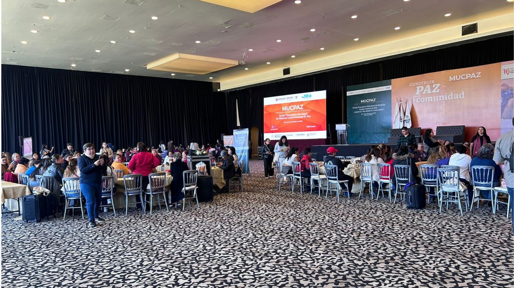

Quiénes somos
El Centro de Investigación para la Paz México es una asociación civil fundada en 2015 por el Dr. Mauricio Meschoulam, y uno de los pocos centros en el país dedicados de forma específica a la investigación de la falta de paz y su construcción. Contamos con un equipo de investigadoras e investigadores de distintas disciplinas, con vínculos institucionales activos con el Senado de la República, ONU Mujeres, el Programa de las Naciones Unidas para el Desarrollo, y universidades como el Tecnológico de Monterrey, la Universidad Iberoamericana y la Universidad Anáhuac. Traducimos ese conocimiento en consultoría estratégica, talleres, educación para la paz y espacios de diálogo dirigidos a gobiernos, empresas, academia y sociedad civil.
Nuestra historia
Nacimos en 2015, fundados por el Dr. Mauricio Meschoulam, a partir de una lectura que hicimos de nuestro contexto. Ante el aumento de la violencia en México hacía falta más investigación que permitiera comprender ese fenómeno de manera sistematizada, y hacía falta también un puente que tradujera ese conocimiento en propuestas concretas para las tomadoras y tomadores de decisiones. Once años después, seguimos trabajando desde ese mismo punto de partida.
Por qué existimos
Entendemos la paz como algo que va más allá de la ausencia de violencia directa. La integran también factores políticos, económicos, sociales, culturales y psicológicos que determinan si una sociedad logra cohesionarse o se fractura. Buscamos que ese conocimiento se traduzca en una disminución real de la violencia estructural y en la construcción de condiciones de paz.
Cómo trabajamos
Sostenemos nuestro trabajo con cuatro prácticas concretas.
Rigor con propósito
Sometemos cada hallazgo a revisión de pares, la misma exigencia que sostiene nuestras catorce publicaciones académicas.
Cercanía con el territorio
Entrevistamos y visitamos comunidades e instituciones en el territorio, preferimos estar donde ocurre lo que investigamos antes que analizarlo desde un escritorio.
Traducción a la acción
Convertimos cada hallazgo en talleres, consultorías o recomendaciones concretas, nunca lo dejamos guardado en un reporte que nadie vuelve a abrir.
Empatía con quien decide
Hablamos con funcionarias y funcionarios, empresas, docentes y familias en su propio lenguaje, sea frente al Senado o en un salón de primaria, sin perder el rigor.

MUCPAZ · Tercer Encuentro Nacional de Mujeres Constructoras de Paz
Traducir investigación de campo rigurosa sobre la falta de paz en México en decisiones concretas para gobiernos, empresas y organizaciones que buscan construir sociedades más justas y resilientes.
Ser el referente en México cuando gobiernos, empresas y financiadores necesiten entender la falta de paz y actuar frente a ella.